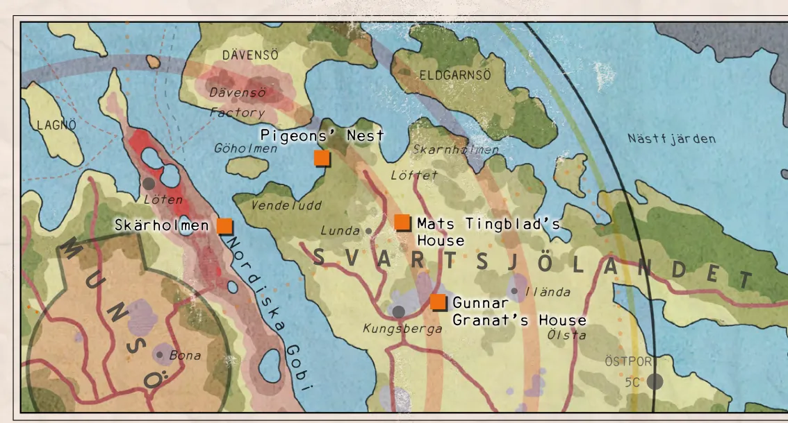

Mystery-Karte

123Ablauf
Mysterium
einführen
einführen
Tauben-
nest
nest
Haus des
Ornitho-
logen
Ornitho-
logen
Gunnars
Haus
Haus
SHOWDOWN
Countdown
- 1. Große Vogelschwärme kreisen über Svartsjölandet.
- 2. Ein junges Paar wird im Wald angegriffen.
- 3. Tauben greifen den Laden in Stenhamra an.
- 4. Die Vögel sammeln sich am Kühlturm …
- 5. …
Ort 2: Das Taubennest S. 124
Fassung MälarinselnBoulder City-Fassung ▸
Buchtext des Ortes, vollständig übersetzt und flach über die volle Breite. Personen wie Mats Tingblad sind anklickbar und öffnen die NSC-Karte als kleines Fenster. Absätze, Beispiel-Dialoge und Vorlesetext erscheinen wie im Buch, aber ohne Spaltenfluss.
Beispiel – Spielleitung: „Ihr steht vor dem alten Taubenschlag. Es ist still, viel zu still …“ Spieler 1: „Ich klettere aufs Dach.“ (Beispiel-Dialoge stehen im Buch kursiv in eigenen Blöcken und bleiben so.)
Wenn ein Ort eine eigene Karte oder einen Grundriss hat (z. B. Mats Tingblads Haus, Millimeterpapier S. 120), steht er als Bild neben dem Text – ungeschnitten, Klick vergrößert.
Ärger: In den Taubenschlag
Bewegen (Körper)Schwierigkeit 2
Erfolg: … · Misserfolg: … (Text aus dem Buch)
HinweisFedern mit Metallringen – Ring-Nr. führt zum Ornithologen.
HinweisDer Futterautomat ist mit Magnetrin-Teilen umgebaut.